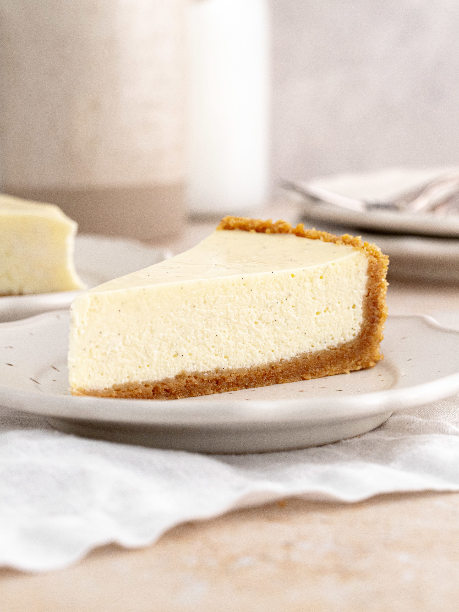

Cheesecake Recipe

Description:
Indulge in the irresistible allure of our cheesecake recipe. With its buttery crust and velvety cream cheese filling
it's a dessert that promises pure delight in every creamy bite.
Ingredients:
- Digestive Biscuits ( Crushed )
- Vanilla extract
- Butter ( melted )
- Cream Cheese
- Granulated sugar
- Eggs
- Fresh Fruits or toppings of choice ( Optional )
Steps:
- Preheat the oven to 350°F (175°C) and grease a springform pan.
- In a bowl, mix crushed digestive biscuits with melted butter until well combined.
- Press the crumb mixture into the bottom of the prepared pan to form the crust.
- In a separate bowl, beat cream cheese until smooth.
- Gradually add granulated sugar, beating until creamy.
- Beat in eggs, one at a time, ensuring each is fully incorporated.
- Stir in vanilla extract until evenly distributed throughout the mixture.
- Pour the cream cheese filling over the crust, smoothing the top with a spatula.
- Bake in the preheated oven for 45-50 minutes, or until the center is almost set.
- Allow the cheesecake to cool completely before refrigerating for at least 4 hours, or preferably overnight.
- Once chilled and set, remove the cheesecake from the pan and garnish with fresh fruits or toppings of your choice, if desired.
- Slice and serve, savoring each delectable bite of your homemade cheesecake masterpiece.